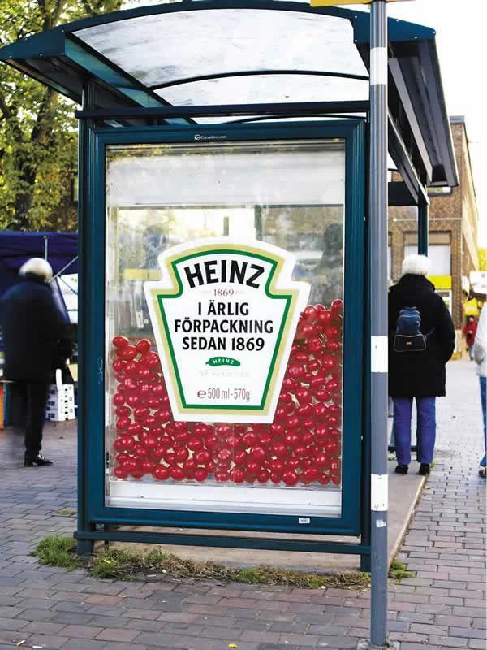

Studio 17 answers
Frequently asked questions
Clear answers before we start.
Explore practical answers about websites, search, content, advertising, digital systems, AI and working with Studio 17.
Browse the questionsQuestions businesses ask before investing in growth
Straight answers to help you understand the options, set realistic expectations and decide what should happen next.
01
Working with a marketing agency
What does a digital marketing agency do?
A digital marketing agency helps a business attract, inform and convert the right audience across websites, search, content, social media, advertising and digital systems. The useful mix depends on the business goal, customer journey and resources already available.
How do I know which marketing services my business needs?
Start with the commercial problem, not a list of channels. We review what customers need to discover, trust and choose the business, then recommend the smallest practical combination of services that can move that decision.
Can I hire Studio 17 for one service?
Yes. A project can begin with one defined need, such as a website revamp, content production, advertising or an internal tool. When several services depend on each other, we explain the connection before proposing a wider scope.
Do you work with small businesses and international companies?
Yes. The scope is adapted to the size, market and operating reality of each business. Studio 17 can support local businesses, growing teams and companies working across several countries and languages.
02
Websites, SEO and GEO
How much does a business website cost?
Website cost depends on scope, content, integrations, languages, design complexity and whether the project is a new build or a revamp. After a short discovery, we provide a written scope, deliverables and price before work begins.
How long does it take to build or redesign a website?
The schedule depends on page count, content readiness, feedback speed and technical complexity. We agree a realistic timeline and review points before starting, and we identify anything that could delay launch.
Can you improve my existing website instead of replacing it?
Yes. A revamp can improve structure, messaging, design, speed, accessibility, SEO and conversion without discarding everything that already works. We first assess whether repair or replacement is the better investment.
What is SEO and how long does it take to work?
SEO improves how search engines understand, access and rank a website for relevant searches. Technical improvements can be implemented quickly, but sustainable visibility usually builds over time and depends on competition, content quality, authority and the condition of the current site.
What is GEO and how is it different from SEO?
GEO, or generative engine optimization, helps a brand and its content become understandable and useful to AI-powered answer systems. It complements SEO by strengthening clear entities, trustworthy information, structured content and answer-ready explanations rather than replacing search optimization.
Can you translate and localize a website for different countries?
Yes. Localization goes beyond word-for-word translation: it adapts language, tone, offers, search intent and user experience to the target market. We plan language structure and metadata so every version remains usable and discoverable.
03
Content, social media and advertising
What is included in social media management?
The scope can include channel strategy, content planning, publishing, community management, performance review and workflow automation. We define which channels and activities support the business instead of posting everywhere without a reason.
Should I use Google Ads or Meta Ads?
Google Ads is often useful when people are actively searching for a solution, while Meta Ads can create demand and reach audiences through interests, behavior and creative. The right choice depends on intent, offer, audience, tracking and budget, and some businesses benefit from using both.
How much should a business spend on advertising?
A useful budget is based on the goal, market, customer value, conversion rate, creative needs and the amount of data required to learn. We separate media spend from management costs and recommend a test that can produce a meaningful decision, not an arbitrary number.
Do you create photos, videos, graphics and scripts?
Yes. Content creation can include filming, photography, video editing, graphic design, scripting and carefully directed AI-assisted content. Every asset is planned for a specific audience, channel and action.
04
AI, digital systems and results
Can AI agents help a small business?
Yes, when the task is repetitive, well defined and connected to a clear business outcome. AI agents can support enquiries, lead qualification, scheduling, document handling, internal knowledge and routine updates, with appropriate human oversight.
Can you connect AI to our CRM and existing tools?
Yes. We can design integrations between AI, CRM platforms, forms, email, documents, dashboards and internal workflows. We first review permissions, data quality, privacy and failure handling so the automation is useful and controlled.
How do you measure marketing success?
Success is measured against the agreed business objective, using indicators such as qualified enquiries, conversion rate, acquisition cost, sales value, retention or time saved. We avoid reporting activity metrics without explaining whether they support the outcome.
How long does marketing take to produce results?
Timelines depend on the channel and starting point. Paid campaigns can generate signals sooner, while SEO, content, positioning and organic growth usually need sustained work; we set realistic milestones and do not promise guaranteed rankings or instant growth.
What do you need from us before a project starts?
We normally need the business goal, target audience, offer, priorities, relevant brand assets, existing performance data and access to the systems in scope. One clear decision-maker and timely feedback also help the project move efficiently.
How do I request a proposal from Studio 17?
Use the contact page or email contact@studio17.world with your goal, current challenge, market and any important deadline. We will review the request, ask the necessary questions and explain the recommended next step.
Still have a question about your business?
Tell us what you are trying to improve. We will help you identify the clearest and most practical next step.
